Abstract
This paper outlines the steps used to construct seamless global triangular networks similar to the planar TIN commonly used to facilitate terrain modeling and volumetrics. It is based on global coordinates and a planetary surface tessellation using spheroidal Voronoi polygons. The techniques used to extend the surface modeling across the Voronoi cell boundaries are presented. The paper also outlines the strategy used for the efficient retrieval of only those parts of the model that are visible in a transient view, as well as the platform- and projection-independent approach to surface rendering.
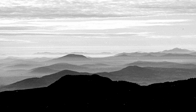 Representation of the physical surface of the Earth in digital systems is a subject of considerable current attention. As the area of the coverage of such systems increases, it becomes necessary to provide methods to model very large, continuous surface conglomerates in a manner which does not violate the surface integrity (i.e., which does not impose hard partitioning as an artifact of the digital model), but, at the same time, provides an efficient spatial index to a small section of the surface of transient interest.
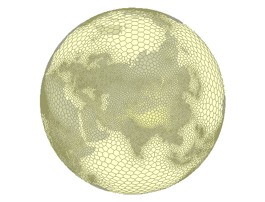
Figure 1: A "global grid" of Voronoi polygons
The Hipparchus Geopositioning Model (outlined in considerable detail in a web-resident publication titled: Hipparchus Geopositioning Model: an Overview) provides a method of construction and manipulation of geometric objects of various levels of complexity (points, lines, areas and surfaces) in a manner which imposes no restrictions on their spatial size or shape. The system is based on two major computational geometry constructs: use of the vector components of the ellipsoid normal instead of the latitude and longitude angles and data-density driven tessellation of the planetary surface using a global grid of spheroidal Voronoi polygons.
The position of a point on the surface of the ellipsoid is best given by a numerical definition of the normal to the surface at that point. The common global coordinates - latitude and longitude - are angles: the first of the two is between the normal and the Equatorial plane and the second between the Equatorial plane projections of the normal and the projection of the prime meridian. Traditional geodetic computations (for instance: given are two known points, determine the length and the azimuth of the shortest line that connects them...) are based on trigonometric functions of those angles and on the expansion of the power series of the eccentricity of the ellipsoid. The angles, however, present two problems when used for computations on digital computers: transcendental functions (sines, cosines) require many more CPU cycles than the algebraic primitives (addition, multiplication) and their areas of singularity must be compensated with complicated and error-prone code. Thus replacing angles with vector components of the ellipsoid normal was noticed as potentially beneficial as soon as the digital computers were incorporated into the geodetic practice (cf. Bomford (1975), remark on formulae "symmetrical and better for computation...", p. 593 - under 'Cartesian Coordinates in Three Dimensions'). Hipparchus computations are consistently based on the ellipsoid normal given by its vector components instead of the latitude and longitude angles.
A "global grid" is, in the most general sense, a geometrical subdivision of the planetary surface which assists in the organization (partitioning, indexing, etc.) of globally-distributed digital data. "Regularity" of the grid usually translates to simple data structures and straightforward classification algorithms. Since no regular and isometric tessellation of the sphere (beyond five platonic solids) is possible, practical applications have two alternatives: to retain in the design of the "grid" as much "regularity" as possible, to be rewarded with a considerable algorithmic elegance, but at the expense of the ability to perform fast and accurate geodetic computations (see Dutton, (1999) for a well-known example of such approach), or to accept the "irregular" nature of the grid while attempting to make computations based on it as fast and as precise as possible.
The Hipparchus system makes no attempt to produce a "regular" grid. Instead, the grid is designed so that any particular implementation of the grid can match the density of the data that inhabits it and so that the parameters which numerically define the grid "cells" assist (and not hinder) the speed and precision of geodetic computations and spatial algebra productions. (Figure 1 shows a sample of such grid with the density derived from the density of the human population). It is based on the surface subdivision known as "Voronoi polygons": a purposefully selected finite and discrete set of "cell-center" points subdivides the surface so that any surface point is uniquely associated (i.e., it "belongs to") the member of the set that it is closest to. The point classification is accomplished using only distance calculations. Point, line, area and surface object sets are in turn defined in terms of the cells they occupy and the vertex coordinates, represented not by a the full (global) vector representation of the ellipsoid normals, but by the vector difference from their respective cell center points. An extended introduction to and computational geometry treatment of the Voronoi polygons can be found in O'Rourke (1994).
This paper outlines the canonical representation of the surface object, and explores the techniques which are used to operate upon it. While the context and the examples used in this paper center on the representation of the terrain, such objects can be used to represent any continuous function for which a sufficiently dense set of point-location dependent scalar values are known, and about which we know enough to postulate that each planetary surface point will have one (and only one) measured or interpolated function value.
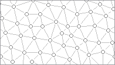 The triangulated irregular network (TIN) is an often used surface representation method in planar computational geometry. Description of TIN data structures and the algorithms (including C language source code) can be found in both Ambroziak (1993) and Lischinski (1994). The TIN approximates a continuous surface with a mesh of triangles which more or less coincide with it. The quality of this approximation depends on the combination of the method by which the elevation measurement points have been selected, and the triangulation strategy. The implementation described herein assumes a more-or-less uniform density of significant points and starts with a simple "least-diagonals" fast iterative planar triangulation algorithm. It is open to accept different triangulation strategies - presumably matching more closely the peculiarities of the input data generation process.
The data structure used to represent a planar TIN is simple and shows only minor variations from one implementation to another. It consists conceptually of an array of points and an array of triangles. The two may be doubly linked, but commonly only the triangles are linked to their vertices. Additionally, each triangle is linked to its three neighbors, with a flag value to signal that a triangle edge is at the same time the edge of the TIN (i.e., it is an "outside" edge). Most triangulation algorithms produce a structure in which all outer edges form a planar convex hull. A point array element consists of planar coordinates and elevation. If the shading or perspective rendering is anticipated, triangle normals might be included in the data; this however would be worthwhile only if the cost of re-computing the triangle orientation far outweighs the cost of additional storage and, usually of even greater significance, the time required to access it.
The main difficulty in the implementation of computational geometry algorithms usually stems from the need to properly predict all (or at least all likely) degeneracy and singularity cases. (See in particular comments under "Robustness" in Lischinski (1994)). While the implementation described in this paper is no exception, it is interesting to note that all such problems were encountered (and hopefully resolved) in the planar ("in-cell") geometry domain.
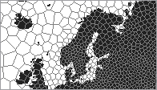 In general, the Voronoi polygon grid used to model the TIN will be used to provide the spatial framework for a number of other object classes. The only requirement that the implementation of TIN data will place on the grid is that the density of the elevation points remains approximately an order of magnitude above the density of the Voronoi polygon centers. In this - and a number of other characteristics - a TIN object in a global Voronoi grid parallels the combined characteristics of Hipparchus point and line sets. This TIN will additionally consist simultaneously of two levels of triangle/elevation data: high-volume triangles with source data points as their vertices and low-volume, large triangles with cell-center and end-points of cell edges as their vertices.
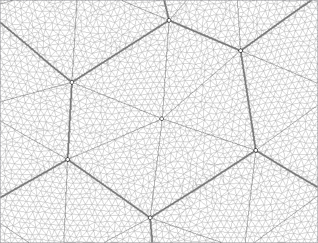
Figure 2: TIN in a Voronoi grid
The source data used in a construction of the Hipparchus TIN object is a Hipparchus point set with elevations. The construction algorithm proceeds cell by cell, transferring the point coordinate and elevation data from the point set into a two-level TIN structure consisting of both individual triangles and the values that describe the elevation of cell-sector triangular vertices. In each cell, the process starts with a selection of all those points that are inside the cell and those points in the neighbor cells that fall within some distance of the shared edge. A triangular grid produced in this step is then intersected with the cell boundary. All triangle edge/cell edge intersection points are assigned an interpolated elevation and marked as "points on the hull". (This can be done, since the Voronoi polygon is at the same time a convex hull of all points in its interior). These points are kept in the final surface representation. Description of planar convex hull and algorithms used to construct it can be found in Sedgwick (1983).
A second triangulation (that includes only cell interior and cell-edge points) follows, this time as a faster, "forced hull" process. The triangles of this second triangulation are stored - together with the point coordinate and elevation data - in a final cell-oriented series of structures representing the surface. Similar to other Hipparchus objects, it is a hierarchical set of tables, at the center of which is a table of "cell headers". It describes that part of the surface which is "over" the cell, and its most important elements are:
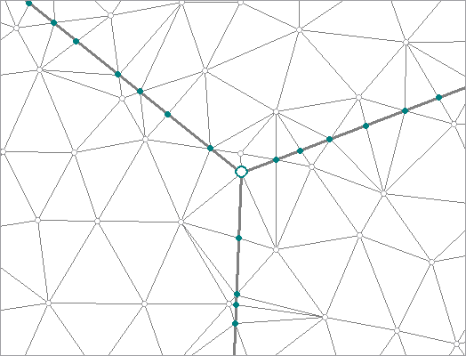
Figure 3: Different types of elevation points
The final TIN point array contains three types of points (clearly distinguished in Figure 3), in order-of-magnitude decreasing numbers:
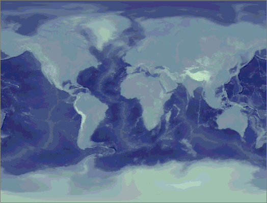
Figure 4: Hypsographic rendering of a global TIN
The test data set (see Figure 4 for its hypsographic representation) used to produce the illustrations of this paper, has been derived from a 5-minute gridded set of elevation points, and used extensively in the development and code testing. A high density Voronoi grid was used as a sampling framework, to avoid an artificially high (and meaningless) data density in high latitudes, and to reduce the point count to a level commensurate with the overall quality of the elevation data. The result of this process was a Hipparchus point set with about 200K points covering the planet in a generally uniform pattern. In addition to its use in the testing, it is anticipated that it will also be used to complete the planetary surface coverage for local (regional, continental, etc.) elevation data sets available in higher density and precision. This strategy is not unlike the frequent use of a Hipparchus Voronoi index center-point set called "isotype", which provides a similar function for regionally-biased grids.
The size of the disk files is approximately 2.5 MB for the source point set, and approximately 8.4 MB as a TIN. In the current implementation, all in-cell triangle indices are 32-bit integers; this removes any practical restriction on the number of triangles in a single cell. Elevations are recorded as 32-bit floating point numbers.
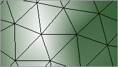 TIN rendering is implemented in a series of functions that belong to the general section of the Hipparchus Library dealing with "geographics". A TIN can be rendered in a "reduced dimensionality" mode, to generate only the points and lines (triangle edges) without the full surface representation. This mode was used to generate Figure 3. The Figure and the other illustrations in this paper were created using a scripted geographical workbench program called GALILEO, available for free download from Geodyssey's web page at http://www.geodyssey.com/.
In cartographic applications a TIN is most often rendered as one of the two graphical artifacts: a hypsographic scale color fill or a shaded surface. The first assigns to each pixel a color dependent on the point elevation, the second assigns a color dependent on the spatial orientation (slope and azimuth) of the surface. Figures 5 and 6 illustrate the difference: both show the map background-fill "layer" generated from a global TIN for an area of the European Alps. Hydrographic network and political boundaries are also shown; both are expected to be - to some extent at least - in an easily verifiable relationship to the surface elevations.
Of the two, hypsographic scale color fill is more demanding of the graphical programming, as it requires painting of pixels that belong to a single triangle with a range of colors. (As opposed to shading, where all the pixels that represent one triangle are in general of the same color). We will therefore in the following concentrate on the hypsographic scale TIN rendering.
The central computation geometry process used in this type of rendering is the ubiquitous triangle "gradient fill": given the x and y (image) coordinates of three vertices and their associated "z" value, fill all pixels "inside" the triangle with a color value commensurate to the interpolated value of "z". This interpolated value is a value that a respective point of the plane defined by three points (vertices) would have.
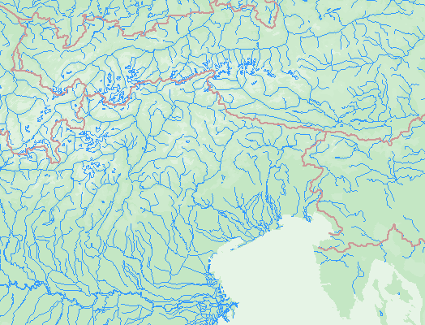
Figure: 5 Hypsographyc rendering
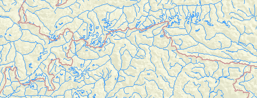
Figure: 6 Shaded rendering
Because of the multiplicity of environments in which this type of rendering is performed, there are different levels at which the division of labor between the application code (including any libraries used), the graphical platform and - possibly - the display hardware can take place. For the Hipparchus Library, we assumed there are at least three such levels, and so provided the means to allocate control to a lower level component (i.e., either the graphical platform or the hardware) at any of those three levels. Their application program interface can be described by the dimension, as follows:
The first level is available in even the most basic graphical application development environments; the last one is implemented in most "2-D accelerated" graphical device drivers and is supported in graphical platforms targeting such devices. Thus an application rendering a TIN would keep invoking Hipparchus Library functions to the point-level under the Win32 API, and pass a whole triangle to an Open GL API.
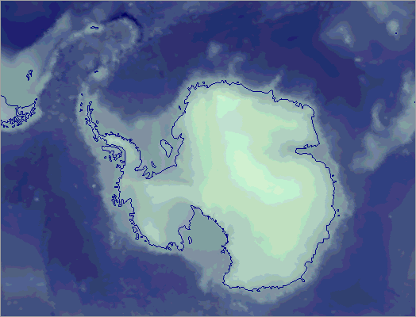
Figure: 7 Sample surface, rendered in (relatively) large scale
A high-latitude section of the global TIN depicted in Figure 7 illustrates another unique advantage of the TIN representation in a Voronoi grid. As mentioned before, all vertices on the cell edge will have an interpolated elevation assigned to them. Likewise, a mean elevation value for the whole cell is a natural by-product of the TIN construction process. This data (cell mean and edges values) can be used as a "generalized" representation of the same TIN: it consists of a set of cell-segment level triangles, probably an order of magnitude fewer per given area than the original TIN. (cf. outlined points and large triangles formed by them in Figure 2). When the scale of rendering becomes sufficiently small, the application can choose to render only the large triangles, thus decreasing the rendering time considerably. Applications will often store Hipparchus Binary Objects (on disk or in a database) so that the low-volume cell-related values are separated from the high-volume point coordinates. If this is the case, rendering based only on the cell-level values (such as depicted on the small-scale map in Figure 8) will require at least an order of magnitude fewer disk transfers than the rendering of Figure 7 - despite the fact that both are generated from the same surface object.
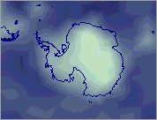
Figure 8: Cell-level generalization
A TIN as a Hipparchus Binary Object shares many architectural similarities with point sets, line sets and regions constructed and recorded in the context of global Voronoi grids. Its construction is based on a planar triangulation within the cell boundaries. Triangle information storage follows the common planar TIN model, but an additional set of elevations is stored to represent the cell edge elevation profile. Simple, straightforward and conjugate linear interpolation of elevations on the edge guarantees that no artifact will be introduced at the cell edge. The cell-based data structure representing the whole TIN provides a simple and fast determination of the elevation at an arbitrary selected surface point, and triangle rendering fits well with the API of common graphical platforms. A novel approach to the problem of generalized rendering is another benefit of the Voronoi grid.